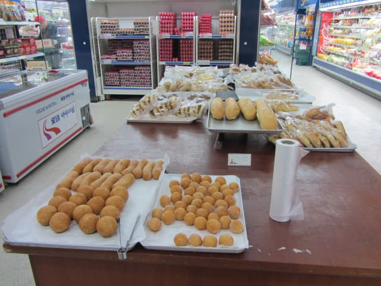

在南海第96小街的「성미분식」餐館吃完滋味午餐, 那兩個超級頑皮小孩已經完全失控, 不斷推拉桌子和打翻東西, 震幅比七級地震還要利害, 還是匆匆離開為上上之策。沿馬路一直走, 又經過122街的油菜花田。
南海公用客運站 (남해시외버스터미널)
約中午十二時四十五分返回南海公用客運站, 在一樓售票處買了兩張往旺池 (왕지 WangJi)的車票, 每位是 1,800韓元。問問可不可以用 T-money, 都是那個答案 — 「NO!」
售票員小姐告訴我們下一班巴士是下午一時三十分, 在10號月台等。看看手錶, 離上車還有差不多四十五分鐘, 開始擔心可否在黃昏前完成所有計劃的行程。
離上車還有四十五分鐘, 便唯有在車站外四處閒逛,
티큐브남해점 (TCUBE) 超級市場
最大發現是南海公用客運站大樓二樓有一間面積很大的超級市場 – 티큐브남해점 (TCUBE), 在那裡消磨了差不多半小時, 而我們每天的早餐也是隔晚在這裡買的。
TCUBE 麵包區有一種圓碌碌的麵包 (圖中細那隻), 好吃到不得了! 連我不太喜歡吃麵包的也要讚! 這麵包很好賣的, 一出爐很快便會賣清光, 接著幾天我們每次來南海公用客運站都會上來看看, 但不是每次都可以買到的!!!

乘巴士往旺池 (왕지 WangJi)
約下午一時二十分返回南海公用客運站, 一輛巴士已經停靠在10號月台, 這裡巴士班次不多, 幾乎可以肯定是我們乘搭那班巴士。
雖說幾乎可以肯定是我們乘搭那班巴士, 但我們也等車長來, 確定了是往旺池 (왕지 WangJi), 才敢上車。登上了車廂, 連同我們, 全車只有五位乘客, 難怪每天只有幾班巴士。
巴士約下午一時二十五分南海公用客運站開出, 坐在我隔離座位的先生知道我們是從香港來, 顯得十分高漲, 不斷和我說話, 除了知道他說南海很好外, 其餘就不懂了, 當我告訴他現在往「왕지」, 他立即豎起大拇指, 表示現在那裡的櫻花很美, 並不停的教我「왕지」的正確韓語發音 — 「Wang Ji」, 「Wang Ji」, 「Wang Ji」。
「Wang Ji」
「Yea」
巴士的速度很慢, 真以為現在是巴士巡遊! 或者, 是我們習慣了緊張的生活吧! 巴士上沒有顯示巴士站名的, 當乘客要下車時, 便告訴車長, 就好像香港的小巴那般。
起初以為坐在我隔離座位的先生會叫我們下車, 原來他比我們還早下車, 唯有希望車長記得我們是在「Wang Ji」下車, 不用擔心, 韓國巴士車長是很盡責的, 一定記得的。
在搜集資料時, 發覺這巴士路線頗特別的 — 一條行駛山腰, 另一條行駛海邊, 巴士站名都是一樣的, 但不知班次如何安排, 只有聽天由命。
旺池 (왕지 WangJi)巴士站 露梁-枉地櫻花路東面起點
巴士於下午二時在一個巴士站停下來, 巴士車長叫我們下車, 表示這裡是「Wang Ji」巴士站了! 下了車, 望見山下的海港, 知道是山腰上的巴士站, 正是我們想去的那個。
旺池巴士站是露梁-枉地櫻花路東面的起點, 我們將會從這裡步行到南海大橋對岸的河東郡, 沿途風景十分優美。

{kind=link}